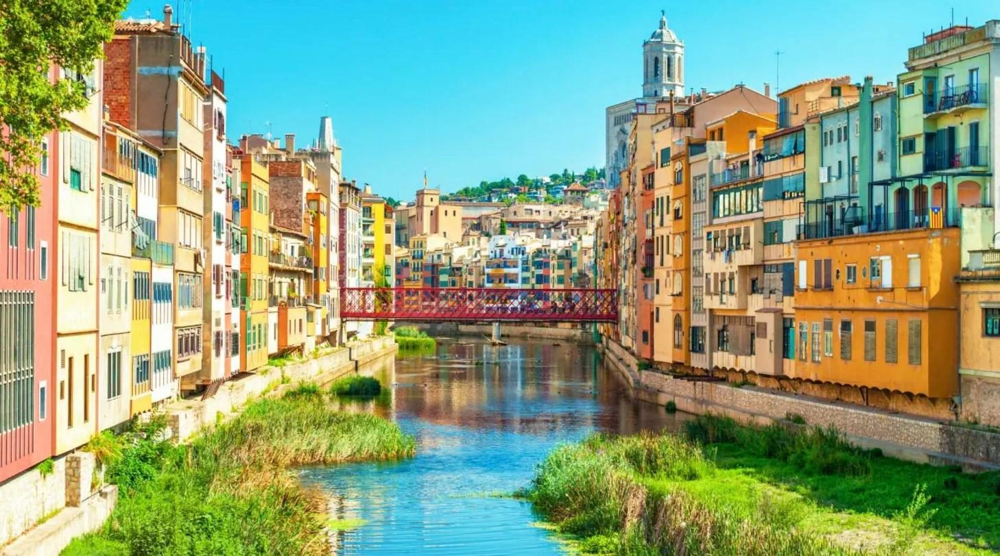
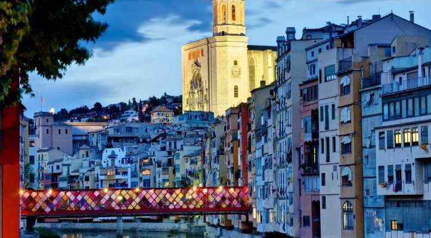
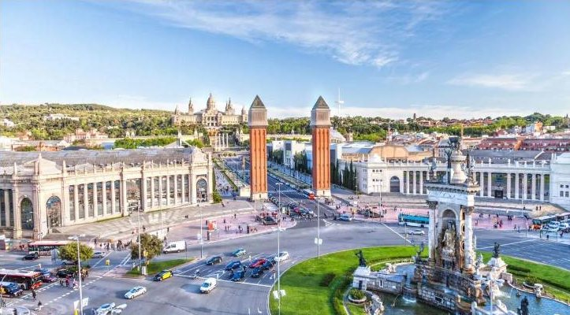
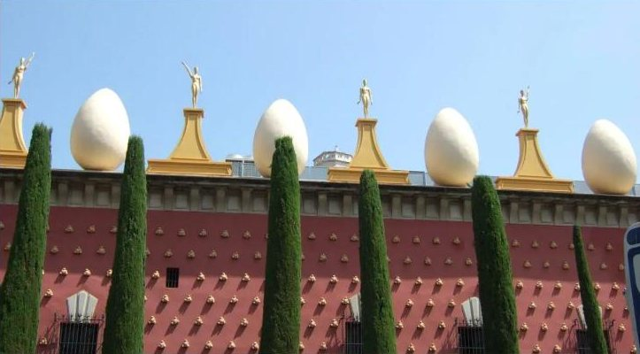
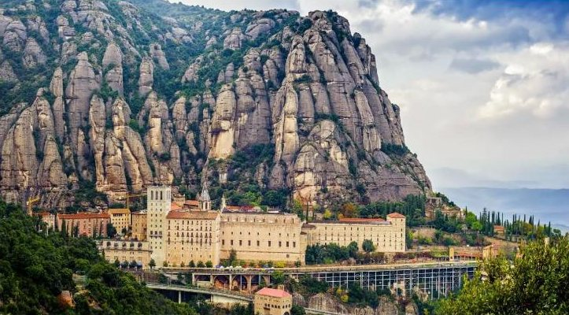

dzień1
Wyjazd z Polski
📍 Poznań / Świecko → Francja
Wyjazd z wybranego miasta zgodnie z rozkładem. Jazda przez noc.

Paryż, 5 nocy nad morzem na Costa Brava i Lyon
Kolejność zwiedzania może się nieco zmienić — o szczegółach decyduje pilot na miejscu.
📍 Poznań / Świecko → Francja
Wyjazd z wybranego miasta zgodnie z rozkładem. Jazda przez noc.
📍 Paryż
Zwiedzanie autokarem i pieszo: Łuk Triumfalny, taras Trocadero z widokiem na Wieżę Eiffla, Pola Marsowe, Pałac Inwalidów z grobem Napoleona, ozdobny most Aleksandra III i plac Zgody.
Potem ogrodami do Luwru, spacer nad Sekwaną, wyspa Cité z katedrą Notre-Dame i kaplicą Sainte-Chapelle oraz ratusz. Część trasy pokonuje się statkiem po Sekwanie. Wieczorem hotel pod Paryżem.

📍 Francja → Costa Brava (Hiszpania)
Po śniadaniu długi przejazd przez Francję do Hiszpanii. Wieczorem przyjazd na wybrzeże Costa Brava.

📍 Costa Brava
Cztery dni nad Morzem Śródziemnym. Można odpoczywać na plaży albo pojechać na wycieczki dla chętnych (opis niżej). Wycieczki odbywają się, gdy zbierze się min. 20 osób; dni ustala pilot.
📍 Lyon (Francja)
Wymeldowanie i przejazd do Lyonu. Spacer po mieście, nocleg w okolicy.
📍 Francja → Niemcy → Polska
Po śniadaniu przejazd w stronę Polski.
📍 Świecko / Poznań
Przyjazd do miast zgodnie z rozkładem jazdy.
Można je wykupić już przy rezerwacji. Ceny od osoby.

Sagrada Família (z zewnątrz), kamienice Gaudíego Casa Batlló i Casa Milà, Plac Kataloński, deptak La Rambla, Dzielnica Gotycka z katedrą i pomnik Kolumba przy porcie.

Girona — jedno z najlepiej zachowanych starych miast w Hiszpanii, z katedrą i kolorowymi domami nad rzeką. Potem Figueres i muzeum Salvadora Dalego (bilet w cenie).

Małe państwo w Pirenejach: kamienny dom parlamentu Casa de la Vall, górskie widoki i zakupy w sklepach bez cła.

Klasztor na skalistej górze, sanktuarium Czarnej Madonny — po Santiago de Compostela najważniejsze miejsce pielgrzymek w Hiszpanii. Wspaniałe widoki (bilet w cenie).
Cena jest za jedną osobę w pokoju 2–3-osobowym i jest taka sama we wszystkich terminach. Składki na fundusze gwarancyjne są już wliczone.
| Cena wycieczki (najtańszy termin) | 2 649 zł |
| Obowiązkowo u pilota: taksy, przewodnicy, metro w Paryżu, rejs po Sekwanie | 70 € ≈ 298 zł |
Euro przeliczone orientacyjnie po ok. 4,25 zł. Bez wycieczek dla chętnych (60–70 € każda) i bez dojazdu do Poznania. Dla 2 osób: ok. 5 900 zł.